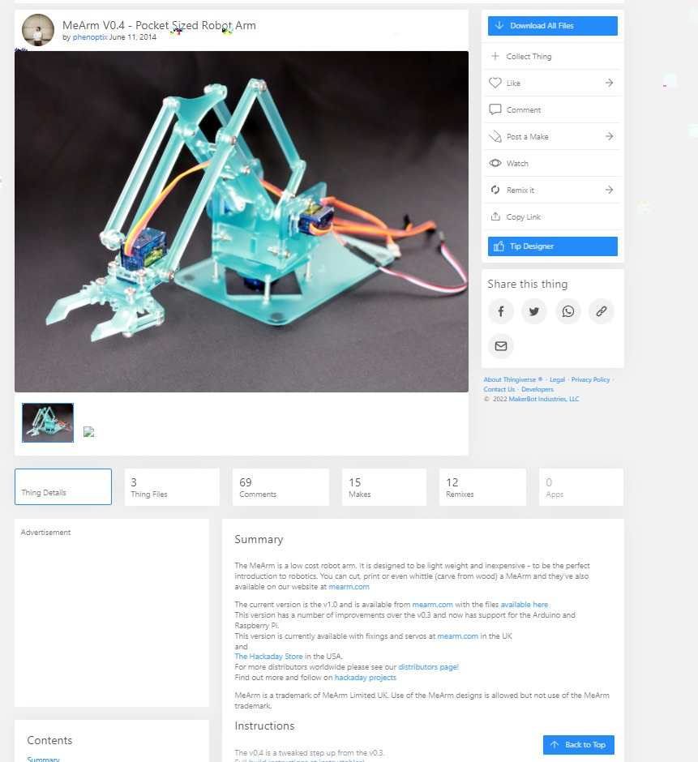
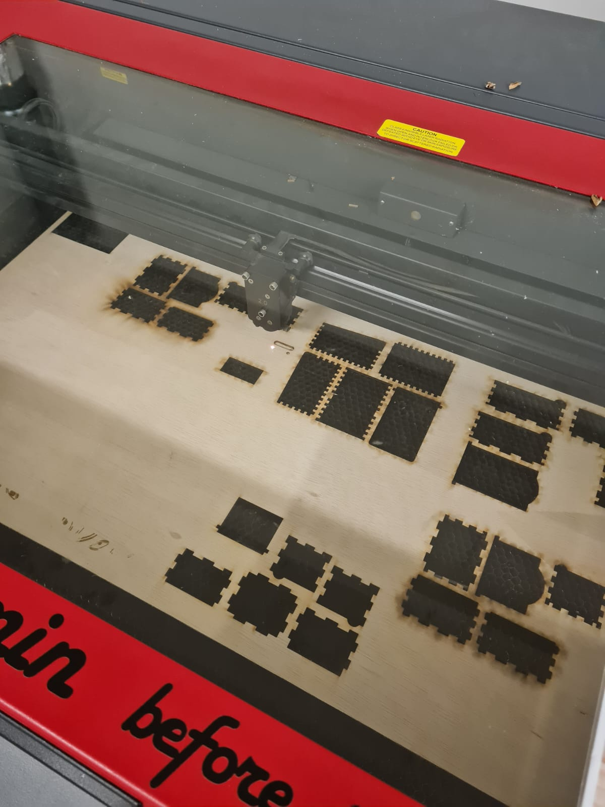
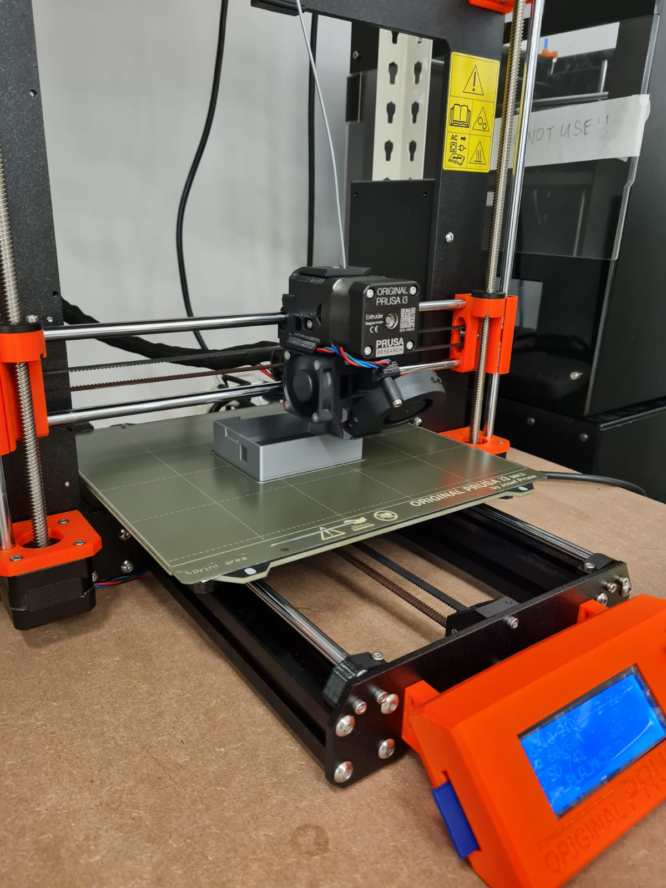
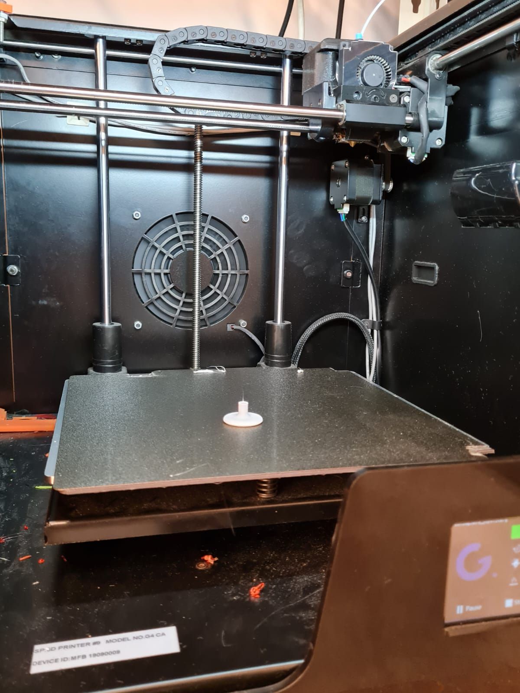
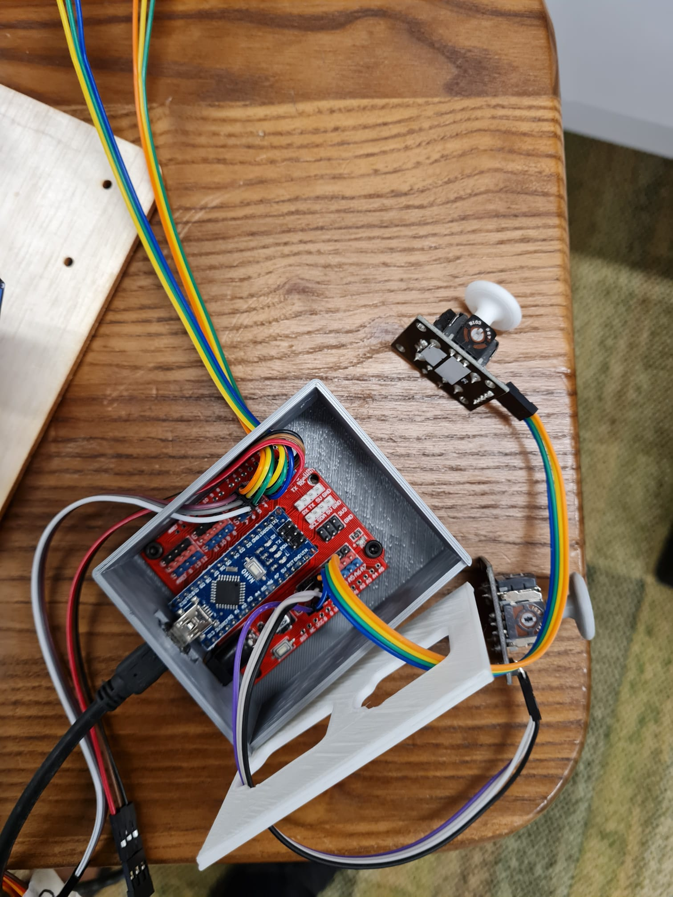
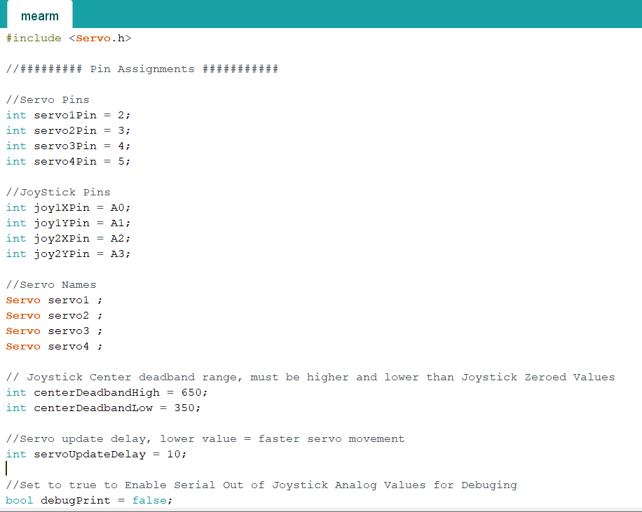
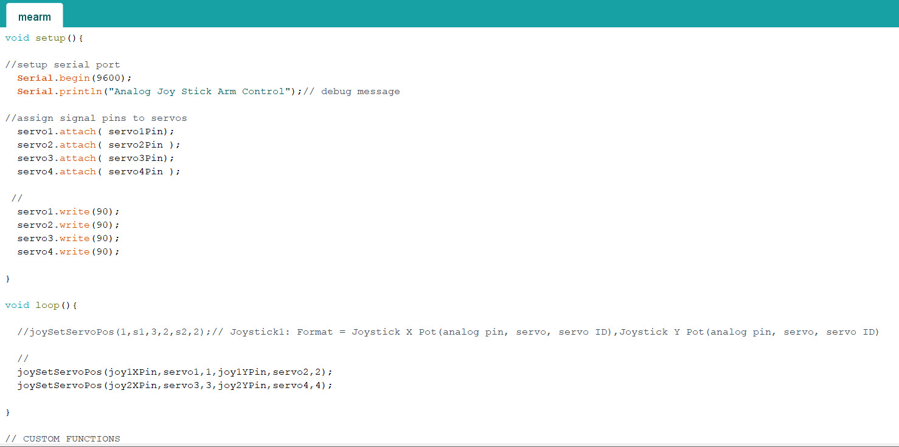
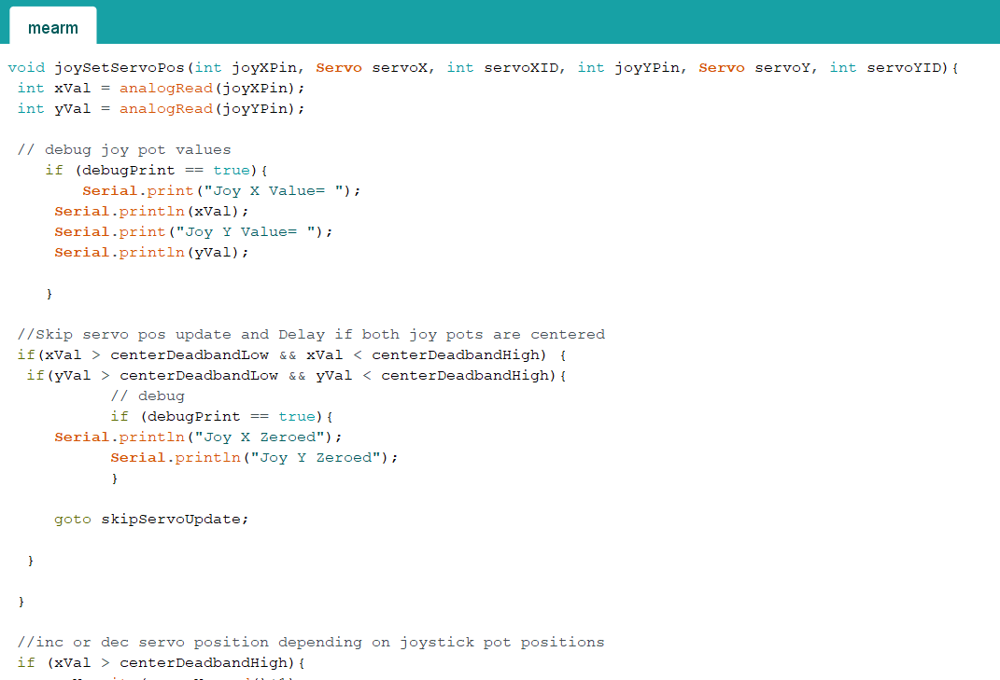
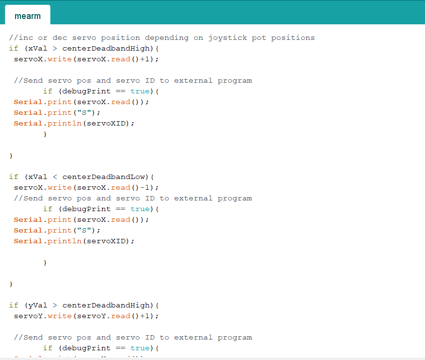
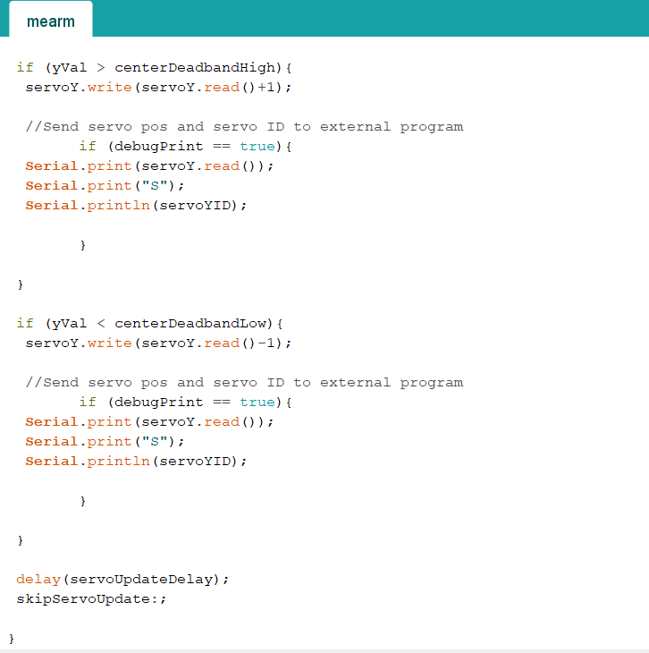

Project Title: Mearm
What does it do?
Mearm is a 4 axis robot arm, It has a grip which allow it to grip things and move them.
Features
- Grip objects and move
What will be made?
| CAD Design | Laser Cutter | 3D Printing | Microcontroller | Input Devices | Output Devices |
| joystick knob,Casing | Mearm template | Joystick knob,Casing | Arduino Nano, Arduino nano shield | Joystick | Servo Motors |
Bill of materials
| Quantity | Item Description | Cost |
|---|---|---|
| 1 | Arduino Nano | Fablab |
| 1 | Arduino Nano shield | Fablab |
| 2 | Joystick | Fablab |
| 4 | Servo Motors | Fablab |
| 1 | 3mm Plywood | Fablab |
| 10-15 | M3 screws | Fablab |
| 20 | Dupont wire | Fablab |
My project idea was to create a MEARM (robot arm). Which allow it to pick and place objects and rotate around.
For MEARM, I use a template from thingiverse to cut robot arm parts and later assemble them with M3 screws.
 MEARM FileOnce I download the template. I proceed on to laser cutter. For the MEARM, what materials to use for laser cutting. you can choose either plywood or acrylic. For me, I am going to cutter out using plywood.
Once I cut all the template of MEARM parts, I proceed to assemble everything.
MEARM assemblyI use this website to follow step by step on assembling the parts together.
I create simple casing to house the arduino nano and wires. To make it neat and tidy. I create a joystick handle as the joystick handle itself was missing. Both the casing and joystick handle were 3D printer I
 This is my connection for my servo motors and joysticks to my arduino Nano.
I programme arduino nano using arduino IDE
    This is how the final product looks like but I think personally for MEARM can be improved and modify.